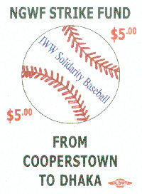

Pittsburgh Industrial Workers of the World (IWW) Hosts Union Solidarity Night at PNC Park
Submitted on Tue, 04/17/2007 - 9:37pm
On April 14 members of the Pittsburgh General Membership Branch of the IWW and Friends of Labor will be in the stands at PNC Park, taking time out of busy work schedules to attend a baseball game. For most workers in the City of Pittsburgh, a night out at PNC Park is a luxury we can only afford a few times each year. Hundreds of unions, churches, and schools organize group trips to PNC Park throughout the baseball season. Many of these organizations have anti sweatshop policies and/or membership that understand conditions in the global apparel industry. Experience petitioning around PNC Park and in the downtown area show that the vast majority of Pittsburghers expect our home team to honestly address the sweatshop conditions throughout their supply chain.
The IWW is proud to demonstrate how we can enjoy baseball while standing up for the workers who sew our team’s apparel by participating in Major League Sweatshop Education @ PNC Park, both outside the gates at the Roberto Clemente Statue and in the stands.
Jeff Koch represents Pittsburgh City Council on the Sports and Exhibition Authority. Members of the Pittsburgh Anti Sweatshop Community Alliance (PASCA) have asked him to engage directly with the Pirates. What is required to support workers sewing Pirates apparel is a system of Certified Payroll that bypasses contractors and subcontractors, not unlike the Project Labor Agreements that the Sports and Exhibition Authority is so familiar with. The recent “One More Penny Per Pound” agreement between the Coalition of Immokalee Workers and McDonald’s is another related example of what the Pirates need to advocate for in discussions with Major League Baseball.
Members of the PASCA, including William Anderson, Kenneth Miller, Barney Ourslor, Tim Stevens, and Celeste Taylor, attended the founding of a governmental consortium to stop sweatshop procurement in Harrisburg on March 29. Jeff Koch and the other Sports and Exhibition Authority members can rely on the information presented there as a starting point for discussion with the Pirates.
Kenneth Miller has been appointed by the IWW’s International Solidarity Committee to represent the union in meetings with the National Garment Workers Federation of Bangladesh on April 28 in NYC. Members of the NGWF sew Pirates apparel through Haddad Apparel and expect to carry out factory investigations, submitting testimony about their working conditions at PNC Park. The clothing from Haddad Apparel bears only the MLB logo and no other tag, such as Nike or Reebok. Major League Baseball conveniently chooses not to know what factories are being used by Haddad apparel at any give time.
The Pittsburgh IWW joined many other organizations in welcoming members of the National Garment Workers Federation of Bangladesh to Pittsburgh on October 10, 2004 when they spoke at Freedom Corner and asked for our support. It was important that we shared our Civil Rights history and the interconnectedness of the Civil and Labor Rights movements. Martin Luther King Jr. understood, and many contemporary leaders clearly understand, the interconnectedness between the struggles of minority groups in the United States and people of color in other parts of the world.
This May the Lucinda Todd Education Center will be so dedicated at a ceremony in Topeka, KS. Lucinda Todd organized the testimony of children and their families for the case that became Brown Vs Board of Education. Her courage and persistence, as well as the specific legal methodologies used to construct Brown V Board are similar to the work being undertaken by workers in the global apparel industry. Celeste Taylor will be making her third trip to Topeka on behalf of PASCA to speak at this dedication.
The 2007 All Star Game this July is in San Francisco. The San Francisco city government, unlike that of Pittsburgh or Allegheny County, was represented in Harrisburg at the March 29 founding of a governmental anti sweatshop consortium. The City of Pittsburgh passed an All Star Anti Sweatshop Proclamation while Luke Ravenstahl was the President of City Council. We are asking Councilperson Koch to lift up in his role on the Sports and Exhibition Authority. An All Star letter from the Pirates to PASCA was historic. It was the first time a team has ever acknowledged the fan concerns about workers sewing team apparel. The fact that the Pirates have not done more to address the testimony first acknowledged there is a deep shame for PNC Park, the team, and our entire city. It is our sincere hope that the people of San Francisco are better represented by the Giants than Pittsburghers are by the Pirates. The Giants should leverage the 2007 All Star spotlight, stand up for Human Rights and support the women sewing Giants apparel. The people of San Francisco should accept no less.
The Pittsburgh IWW welcomes labor union activists and anti sweatshop activists to join our organization, the only labor union with open membership in the Pittsburgh area. While other unions only sign up workers in the context of union contracts, workers organize IWW by joining the IWW. Our organizing of the first Union Solidarity Night @ PNC Park is an example of Major League Sweatshop Education intended to explicate what the Pirates must do to represent this regions high standards for workers rights and set an example for other organizations hosting group visits to PNC Park. Hear IWW anti sweatshop speakers at 5:30 near the Roberto Clemente statue. Watch for us during the game.
UPCOMING ANTI SWEATSHOP FILM AND MEETINGS
April 20 – 22 China Blue Sweatshop documentary at Melwood Screening Room
Wednesday April 25 – 7 PM at Ritters Dinner (back room) 5221 Baum Blvd
Schedule a PASCA speaker by calling Michelle 814-594-6112
UPCOMING IWW EVENTS INCLUDE:
April 28 May Day Celebration and midnight march to the Battle of Homestead Monument
May Day March in support of Immigrant Rights starting at 4 PM at the Allegheny County Jail
Ongoing organizing drives include our Starbucks Workers and Canvassers Unions. ###
BACKGROUND:
Take me out to PNC Park with the IWW on Saturday April 14
The Pittsburgh Pirates play the San Francisco Giants at 7:05 on Saturday April 14. Members of the Pittsburgh IWW and Friends of Labor will meet at the Roberto Clemente statue at 5:30 and will entertain the crowd with fiery speeches and short skits – some of the best Major League Education in America. Pirate Fans will be encouraged to check the tags on their Pirates apparel and ask the Pirates where it was made. DOWNLOAD the attached file and order your tickets to enjoy the game and talk union with members of the IWW on Saturday April 14.
Take me out to the ball game.
Take me out with the Wobs.
Buy me some shirts not made in sweatshops,
I don't want to look like a slob.
Let me root root root for the workers,
If they don't win it's a shame.
For it's one, two, three strikes, you're out,
At the old exploitation game.
Register your Pirates apparel with the IWW's Sweatshop Finders and sign up to see Barry Bonds at PNC Park Union Solidarity Night April 14. Hundreds of groups, churches, unions, schools, attend baseball games together every season – now is the time to demonstrate, like Pittsburghers did at the 2006 All Star Game, what it means to LOVE BASEBALL and HATE SWEATSHOPS.
Many Pittsburghers have at least one piece of Pirates apparel, an expensive New Era hat or Majestic jersey, a free t-shirt you received with credit card application or hat you were given at the gate, the IWW Sweatshop Finders can come pretty close to uncovering the working conditions in which it was made. DOWNLOAD that attached form and fill it with information about your Pirates apparel.
Members of the National Garment Workers Federation of Bangladesh (NGWF) sew Pirates' apparel in sweatshops. Pirates' lawyer Larry Silverman, Bob Nutting, Kevin McClatchy or any researcher/reporter, only need to ask Haddad Apparel for a list of the factories they use to sew Pirates apparel in Bangladesh to determine this for themselves. A good seat to watch the game at PNC Park costs just $9. It cost $15 to sit with the Wobs at PNC Park. $6 is a contribution to the NGWF.
The NGWF is a union in an area producing apparel for export to the United States capable of wide spread factory monitoring and verification of wages reported by companies to baseball fans like us. In spite of intimidation, the never ending threat of plant closings, and a system of labor laws that don't work for workers, the NGWF is building membership and maintaining activity throughout the garment industry of Bangladesh. The NGWF is able to do this because it focuses on organizing the worker, not the job. Its members are empowered with their fundamental Human, Women's, Worker Rights and high expectations for themselves and their families.
Enjoy baseball in Pittsburgh and stand alongside the NGFW on Saturday April 14. DOWNLOAD the attached flier, Register your Pirates apparel for the IWW's Sweatshop Finders to research for you. Reserve your seat with the IWW and Friends of Labor at Union Solidarity Night.
We are setting an example the churches, union and schools all across Western PA who organizes group trips to PNC Park. PNC Park is not only a fun social event; it belongs to and represents the people of Western PA to the whole world. The Pittsburgh Pirates have an obligation to use the Pirates and PNC Park logos in ways that represent us… even when it is not as easy for them as taking their share of the MLB Licensing Revenue Sharing Agreement or offering the cheapest possible options for game day give always to their advertising partners. No Sweatshops Bucco!
7 Springs Mountain Resort is sponsoring a Pirates Fleece Blanket Promotional give away on April 14! Your $15 is a ticket to watch the Pirates pitchers stand up to Barry Bonds, a $6 contribution to the NGWF, a FREE Pirates Fleece Blanket – the Pirates are going to tell us where this Blanket is made and what they are doing to ensure the labor rights of the workers who make it.